Reverse-Engineering the Banvie 1 Remote Start & Keyless Entry Unit
🎥 Watch the Build: 5-Part Video Series


Overview
I bought a BANVIE 1 aftermarket remote-start and alarm kit, one of those $50 universal keyless-entry boxes meant to add remote start to almost any car. The plan was to wire it into my 2003 Mitsubishi Lancer and eventually control it by voice through Alexa. The kit ships with two key fobs, a push-to-start button, a shock sensor, a siren, and a control unit that already knows how to run a full arm/disarm and remote-start sequence, complete with theft detection on the brake pedal, the doors, and the ignition button.
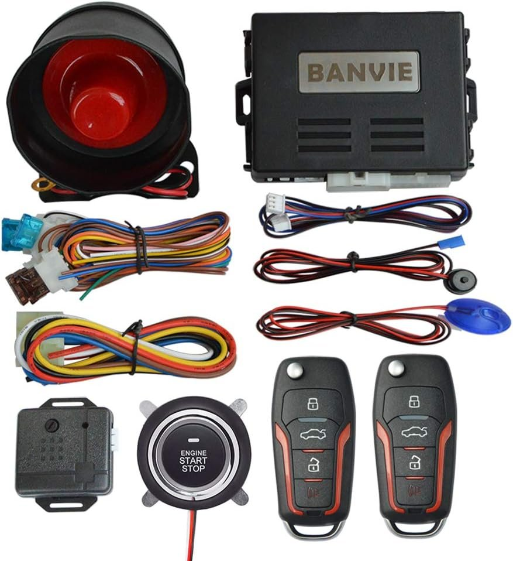
The question was how to get Alexa into the loop without breaking what the kit already does. I had three options:
- Reflash the onboard microcontrollers to add wireless control natively: Difficult without a datasheet or a way to dump the existing firmware, and easy to brick the only unit I had.
- Connect a Wi-Fi/BLE microcontroller (an ESP32 or ESP8266) wired directly to the relays and power transistors, driving them myself: Simple in principle, but it would mean re-implementing the arming sequence, theft detection, and start-up logic that the BANVIE box already handles.
- Embed a microcontroller inside a spare remote key to fake button presses electronically: workable, but it sacrifices one of only two remotes I own.
I went with a fourth option: leave the BANVIE microcontrollers alone and make them think I pressed a button on the real remote. If I could decode the radio protocol between the remote and the control unit, a NodeMCU could generate the same signal and inject it on the wire the RF receiver already uses. No firmware changes to the BANVIE board at all.
That took a lot of multimeter, oscilloscope and continuity-testing time (also covered in the five-part video series).
Quick Facts
- Two onboard microcontrollers: a Holtek HT66F004 running security/arming logic, and a ChipOn C61F133D running the engine start/stop sequencer, each driving its own ULN2003G Darlington array.
- RF reception handled by an MRF310R-family receiver IC feeding directly into the Holtek chip.
- The remote uses a fixed (non-rolling) 24-bit code, on-off keyed with two pulse widths (effectively PWM).
- A NodeMCU (ESP8266) reproduces that bitstream in software and injects it straight onto the receiver line, with no changes to the BANVIE firmware.
Inside the Control Unit
Inside the control unit is a dense little board with two 8-bit microcontrollers, each handling half of the system. Each microcontroller has its own ULN2003G Darlington Array IC. Additionally, there is an RF receiver and decoder IC on the PCB. There are five electro-mechanical relays and four ZX520 power transistors handling the higher-current loads.
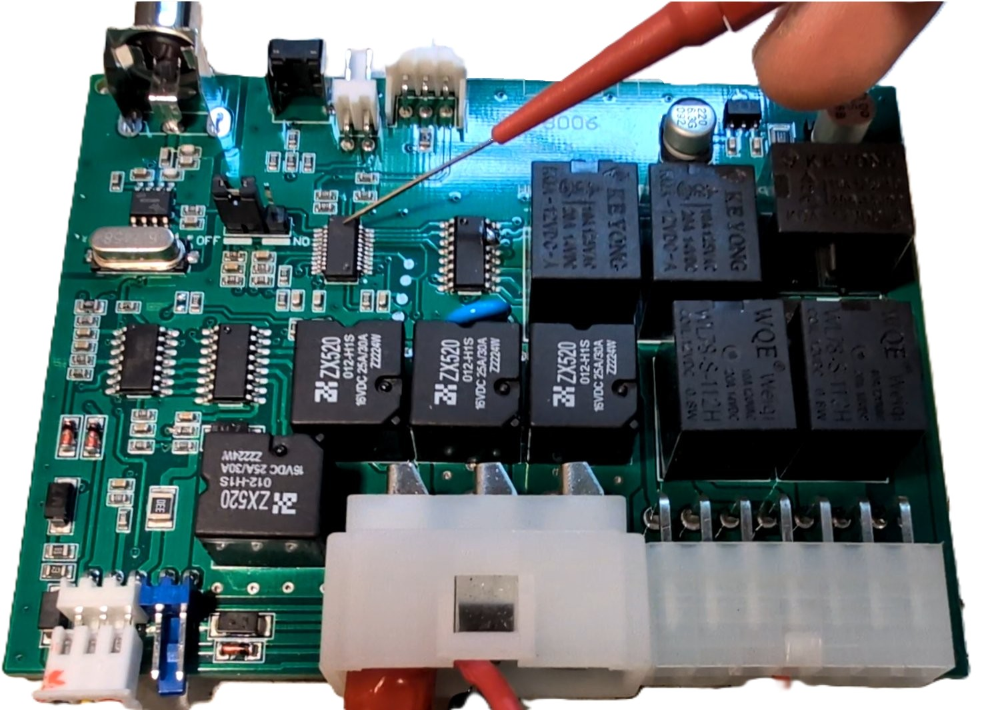
A small KIA 8A140 linear regulator (similar to an AMS1117) drops the car's 12 V down to 5 V for both microcontrollers.
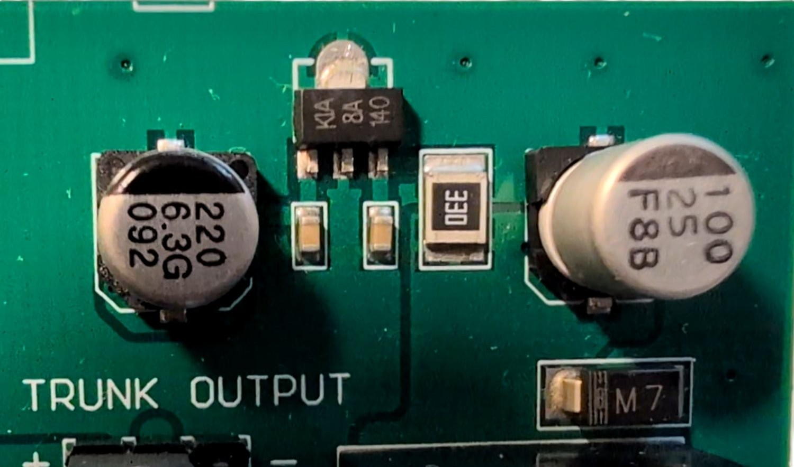
Holtek HT66F004: Security, Alarm, Mechanical Actuation
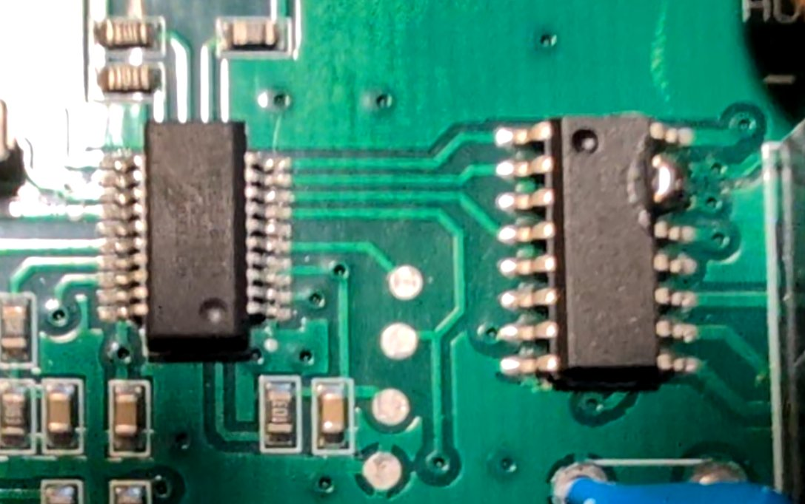
ChipOn C61F133D: Push-to-Start Button, and Remote Start Sequence Handling
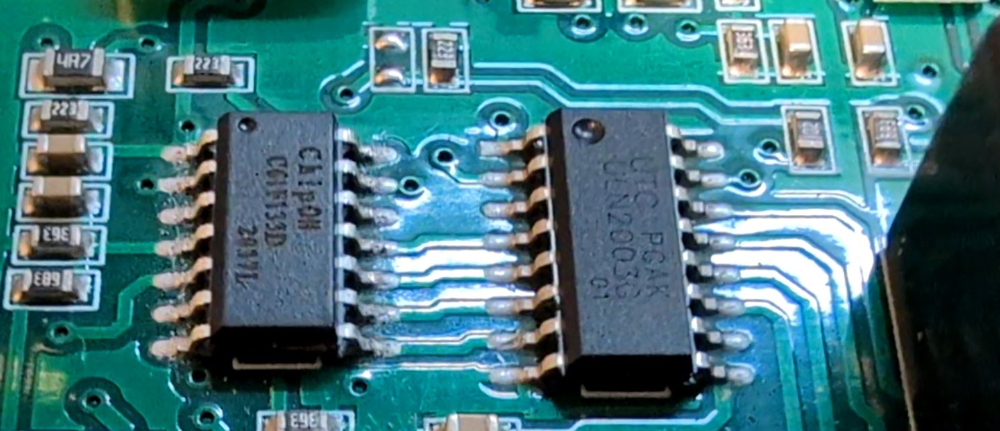
RF Receiver & Supporting Peripherals
I found the RF receiver by following the antenna trace into the board and checking the pinout against datasheets. It's an MRF310R (a generic part usually matched to the SYN470 family) and needs an external oscillator for timing.
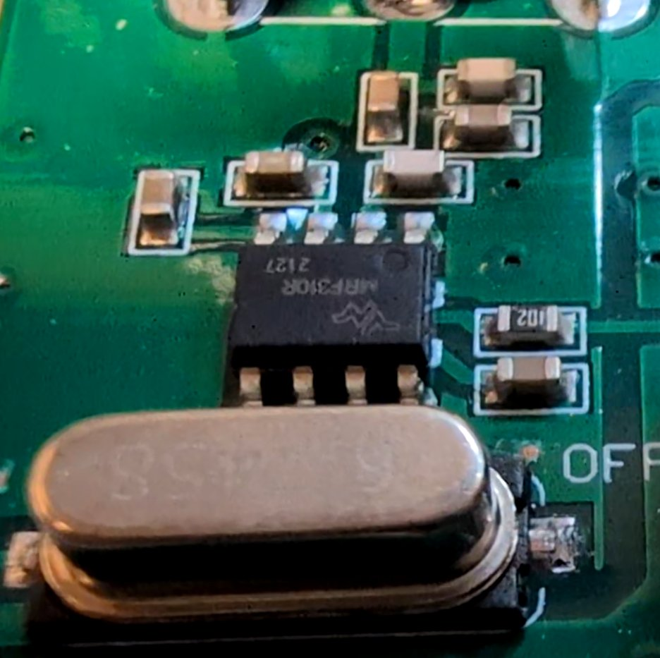
Step 1: Mapping the Pins on the ULN2003G with an Oscilloscope
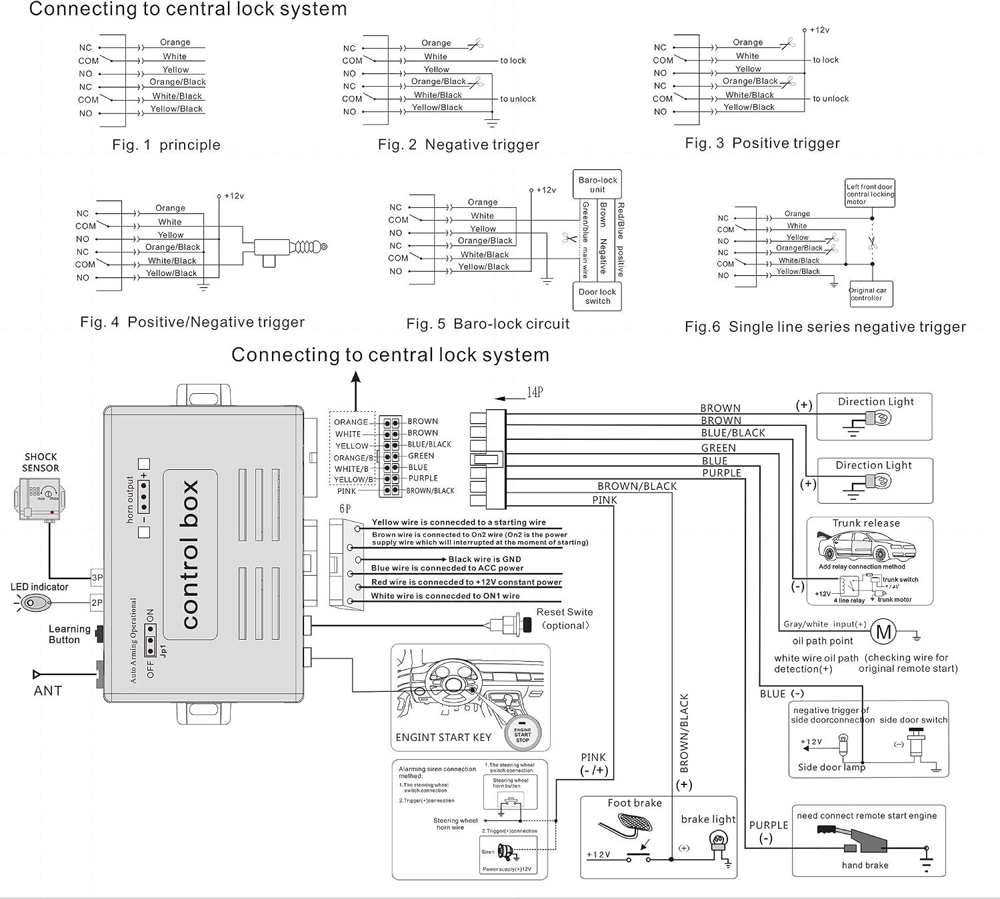
The wiring diagram from the Banvie product page on Amazon covers the high-level connector layout, but says nothing about which pin on the ULN2003G actually corresponds to which function. For this particular ULN2003G package, every pin except the bottom-left and bottom-right is part of an input/output Darlington pair, so the plan was to probe each pair while pressing keys on the remote and match the response to what I already knew the car should physically do.
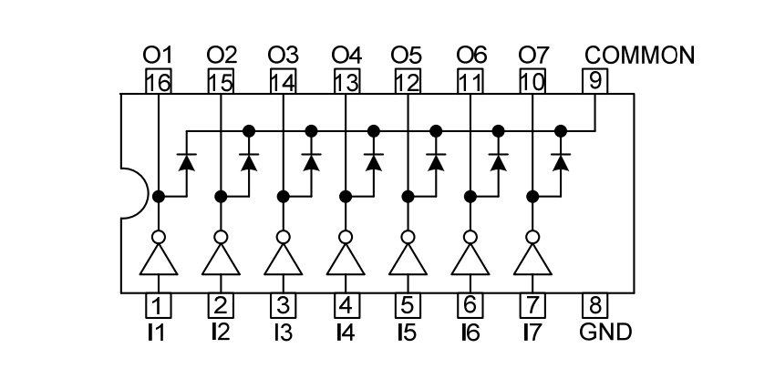
The remote key has 4 buttons, lock, trunk release, unlock, and mute keys.
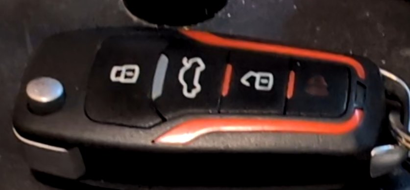
Probing the ULN2003G pins while pressing different keys to figure out the pin mapping wasn't straightforward. This was because several relays fire together on a single key press. Knowing how the car's alarm, indicator lamps, and horn behaved in response to these different key presses helped a lot to infer the pin mappings on the ULN2003G connected to the Holtek microcontroller.
- Unlock: doors unlock, indicators blink twice, horn honks twice - three relays firing, two of which pulse in sync, twice.
- Lock: doors lock, indicators flash once, horn honks once - the same three relays, but each pulsing only once.
- Muted Lock/Unlock (Mute pressed first): identical behavior to the above, except the horn stays silent - which immediately isolates the horn relay from the indicator relay, since only the indicator output still pulses twice/once accordingly.
- Trunk release: its own dedicated key with no overlap with any other function, making it trivial to isolate.
The activations on each pin as observed via an oscilloscope matched these expected behaviors.
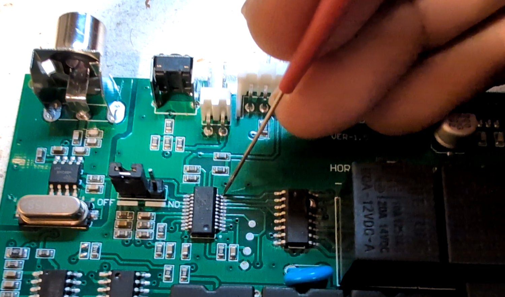
Probing pin 1 on the darlington array IC (connected to pin 10 on the Holtek microcontroller):
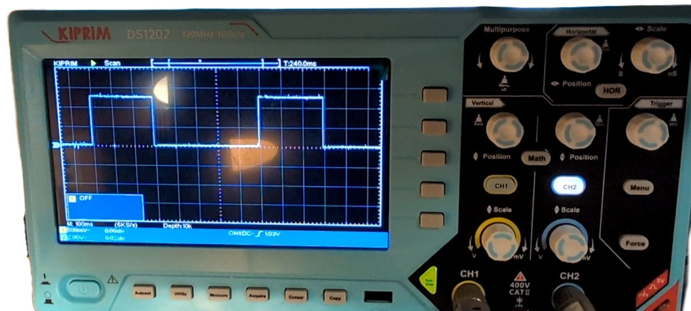
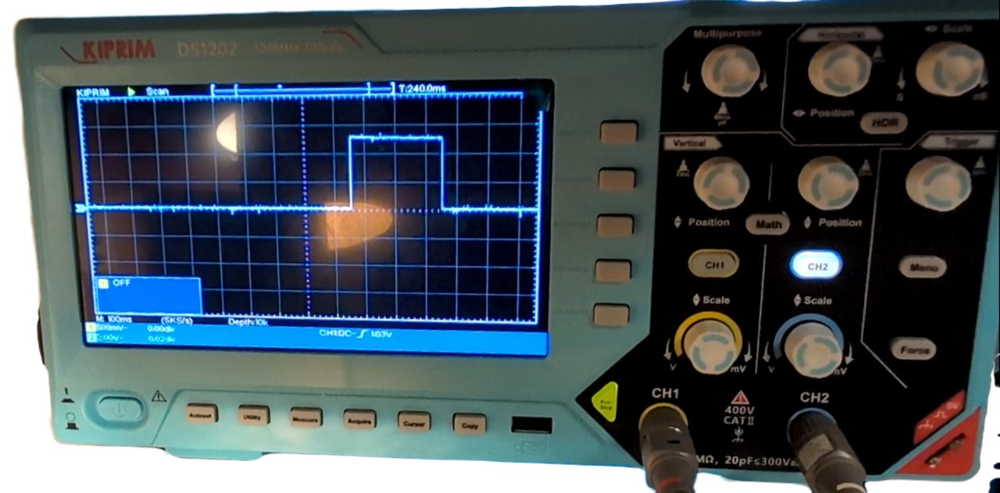
On pressing unlock, the pin showed two pulses, and a single pulse on pressing lock.
A line that pulses on both lock and unlock has to be either the indicator or the horn. The muted test settled it: still one pulse on muted lock and two on muted unlock. Mute silences the horn, so this had to be the indicator lamp output.
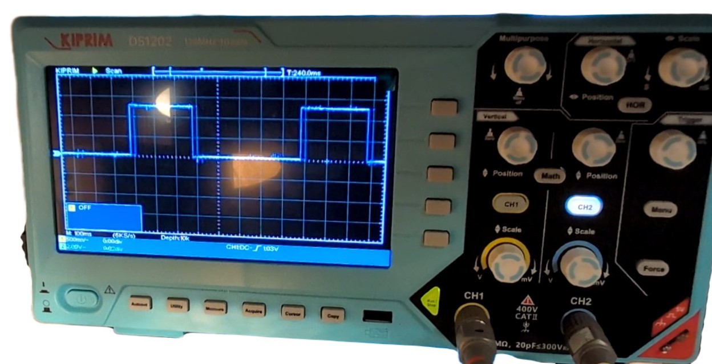
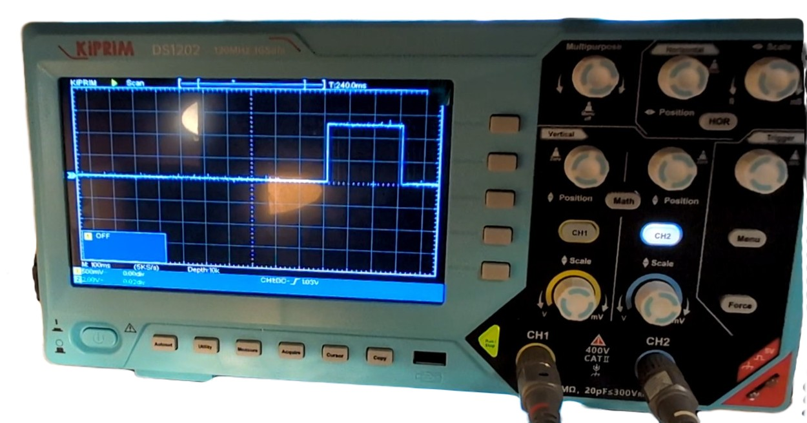
Repeating this pin by pin (a single pulse on lock with nothing on unlock, and the reverse) identified the dedicated lock and unlock actuator lines directly:
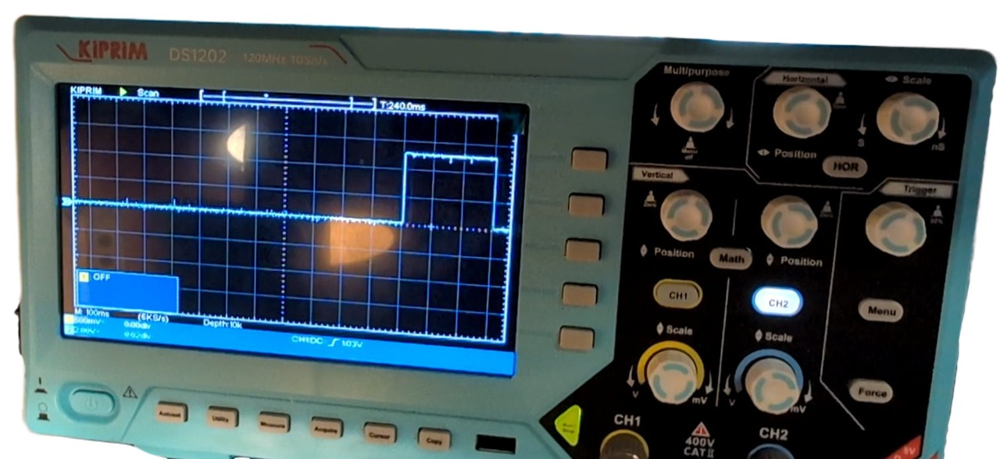
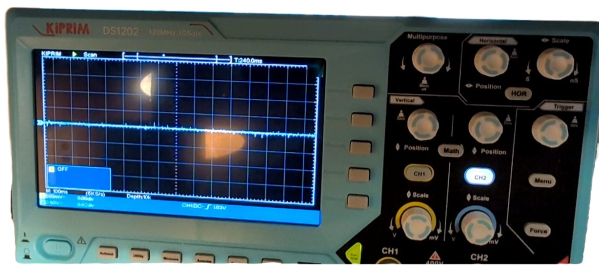
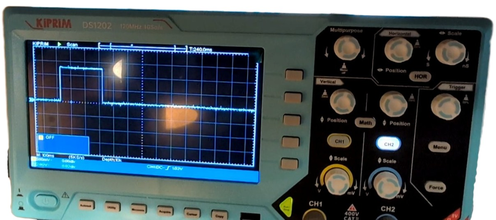
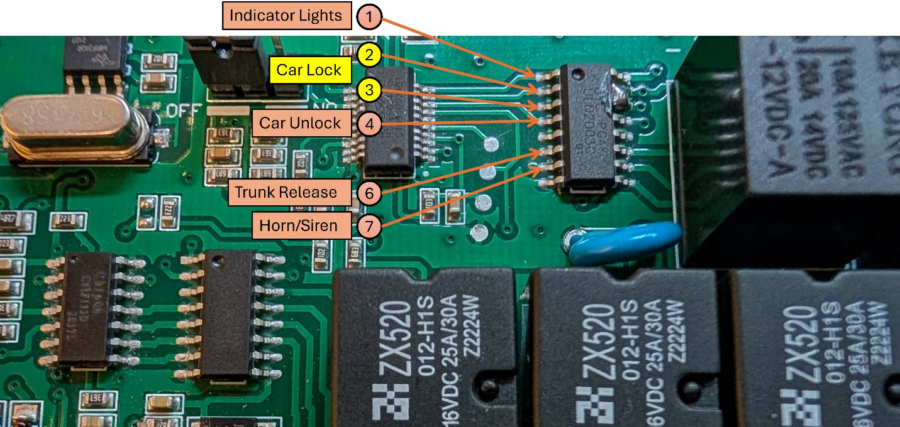
I did the same for the remaining pins (listen for the relay click, then confirm on the scope) and ended up with this map of the actuation Darlington array:
| Pin | Function (Relay Activation For) |
|---|---|
| 1 | Indicator lights |
| 2 | Lock |
| 3 | Lock |
| 4 | Unlock |
| 5 | Not connected |
| 6 | Trunk release |
| 7 | Horn / siren |
Step 2: Mapping the Holtek HT66F004 Microcontroller
Next was the Holtek HT66F004, which handles the alarm and security state in addition to driving the previously pin-mapped ULN2003G. From the factory logic, theft should be flagged whenever the brake is pressed, a door is opened, or the push-to-start button is pressed while the security system is armed. Therefore, the brake pedal, push-to-start, and door-switch signals should all terminate at this chip. I started from a simplified version of the wiring diagram and its connector:
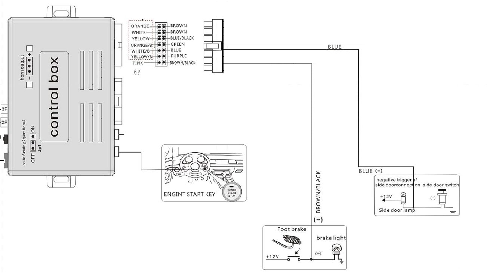
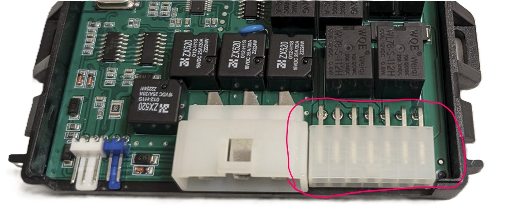
Working from the expected voltage behavior of each signal (documented on the wiring diagram) and probing every pin around the two microcontrollers while manually toggling each input:
- Brake pedal expects +12 V when pressed. I pulsed the brake line between 12 V and ground while watching every pin, and found pin 14 going HIGH exactly when the brake was pressed.
- Door switch expects a pull to ground when a door opens. Pin 16 went LOW exactly when I grounded the door line.
- Push-to-start button: pressing the physical button and watching for any pin change isolated pin 17, which went HIGH once for ACC and again for Ignition.
- Armed-status indicator: the system's blue LED blinks once armed, implying a dedicated status pin. Pin 18 stayed LOW while disarmed, but went HIGH briefly and then into a square wave once the car was locked, revealing a clean match for the armed/disarmed indicator.
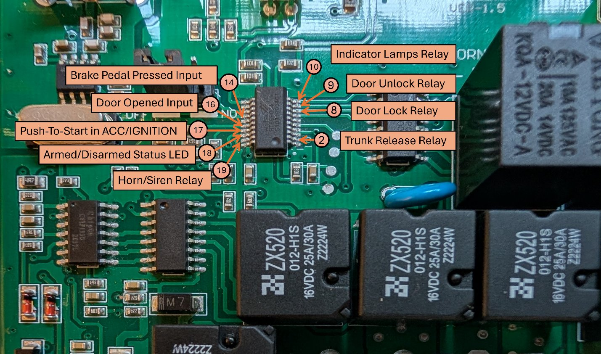
| Pin | Default State | Function |
|---|---|---|
| 2 | LOW | Activation signal for the trunk release relay |
| 8 | LOW | Activation signal for the door unlock relay |
| 9 | LOW | Activation signal for the door lock relay |
| 10 | LOW | Activation signal for the indicator lights relay |
| 14 | LOW | Goes HIGH when the brake pedal input line goes to 12 V (brake pressed signal) |
| 16 | HIGH | Goes LOW when the side door switch sensor goes to GND (door open signal) |
| 17 | LOW | Goes HIGH when the push-to-start button is pressed once (ACC) or twice (Ignition) |
| 18 | LOW (when unlocked) | Alarm-armed signal: Stays LOW while unlocked (disarmed). Goes HIGH briefly, then square-waves, once locked (armed) |
| 19 | LOW | Activation signal for the horn/siren relay |
Step 3: Mapping the ChipOn C61F133D Microcontroller (Engine Start/Stop)
My guess was that the start/stop logic lived on the ChipOn C61F133D and waited for a go-ahead from the Holtek chip. The push-to-start button was the easiest way to see how that sequencer behaved.
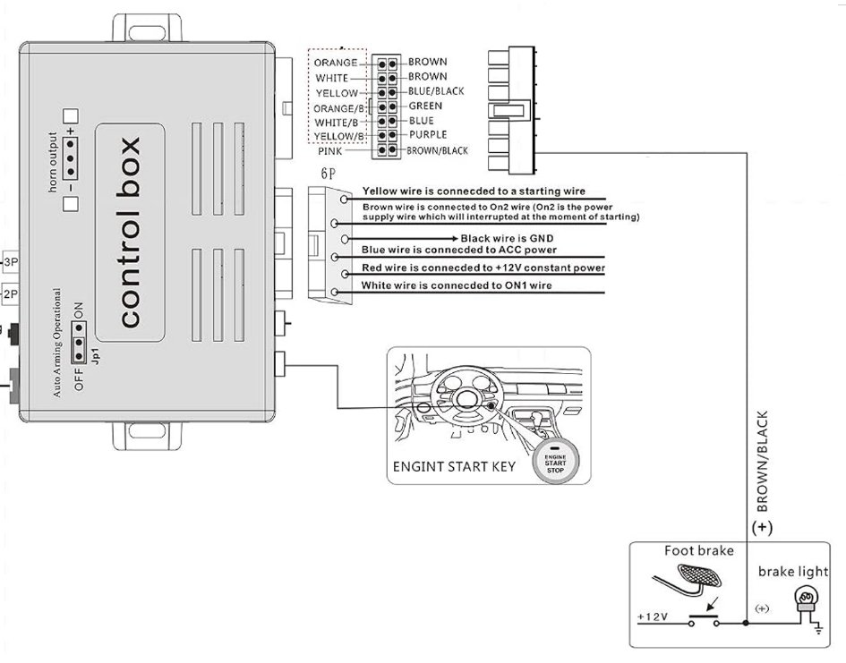
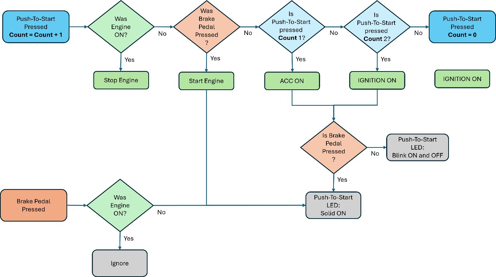
I went through the startup sequence one step at a time and probed for pin changes at each stage:
- Obs. 1: Every press of the push-to-start button momentarily pulsed
pin 13HIGH, so this had to be the button's raw press-detection input. - Obs. 2: Pressing once (no brake) enters ACC mode;
pin 10went HIGH, identifying it as the ACC-line driver. - Obs. 3: During ACC, the push-button's LED blinks;
pin 7generated a matching square wave, identifying it as the LED driver (fed through an adjoining ULN2003G that inverts the signal, so the Darlington output is used as the LED's ground return). - Obs. 4 & 5: A second press enters Ignition mode;
pin 10stayed HIGH whilepins 9and11also went HIGH, so these had to drive theON1/ON2ignition lines. - Obs. 6: The LED continues its square-wave blink through Ignition mode as well.
- Obs. 7: Pressing the brake pedal before starting makes the LED go solid; correspondingly
pin 7stopped square-waving and held solid HIGH for as long as the brake stayed pressed. - Obs. 8:
Pin 4goes and stays HIGH for as long as the brake is pressed, so this had to be the brake-pedal-press registration pin. - Obs. 9: Pressing the push-to-start button with the brake held down runs the full startup sequence;
pin 8pulsed HIGH momentarily, identifying the starter-motor trigger (routed through the adjoining ULN2003G's pin 7). - Obs. 10: After the engine starts,
pin 10(ACC) andpin 9stayed HIGH, as expected for a running engine.
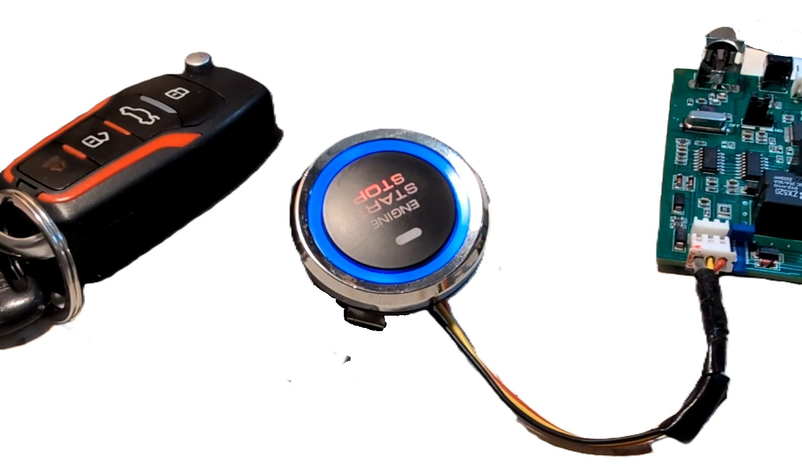
The Remote Engine Start Sequence
The remote-start path adds a handful of additional steps and components on top of the manual push-to-start logic.
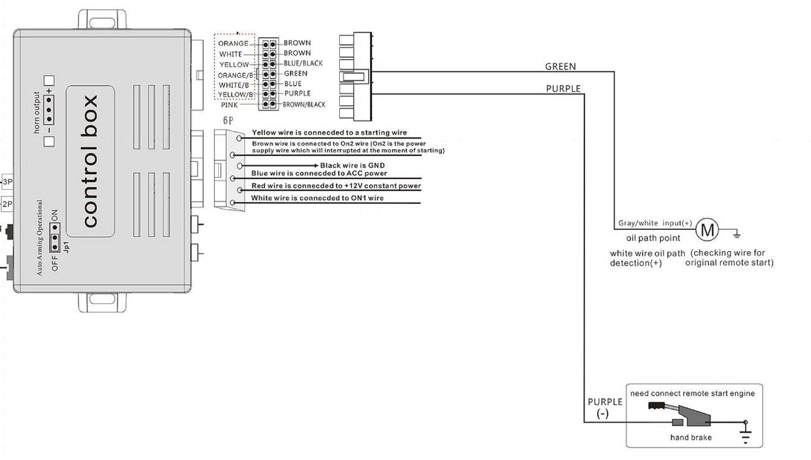
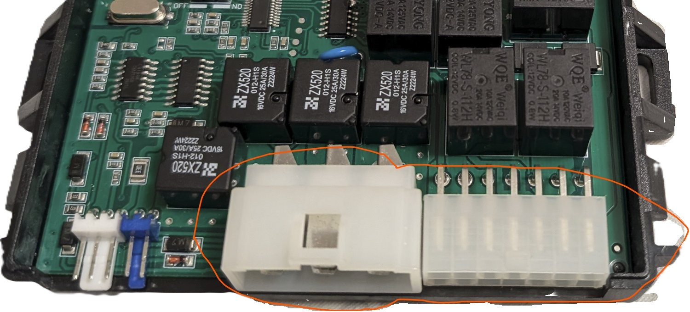
The ignition sequence for an engine has several timed steps. Once the remote start command is received, the microcontroller must:
- Power the
ON1andON2ignition lines. - Power the starter motor while simultaneously pulling
ON2to ground during cranking. - Check whether the engine actually started, by monitoring the oil pressure sensor.
- Power the ACC line for accessories (ground → stable 12 V).
- Retry cranking if the oil pressure sensor doesn't confirm a start.
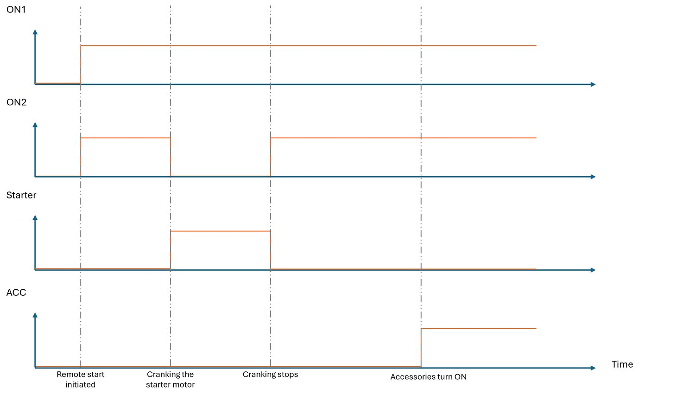
Remote start also has two extra conditions: the handbrake has to be engaged, and unlock has to be pressed three times quickly.
- Obs. 11: Toggling the handbrake input between ground and 12 V found
pin 3on the ChipOn IC registering it. This pin was normally HIGH, but went LOW when the handbrake engaged. - Obs. 12: Toggling the oil pressure sensor line found
pin 12registering it, going HIGH once the engine was confirmed running. - Obs. 13: Every time the remote's unlock button was pressed,
pin 5which is normally HIGH, briefly pulled down to ground. Three such consecutive negative pulses were what actually triggered the remote-start sequence, strongly suggesting the ChipOn microcontroller is simply counting these pulses. I found no direct line running from the Holtek IC to this pin, so it's likely sampling the same output the door-unlock relay uses.
All of this consolidated into a complete pin map for the ChipOn microcontroller:
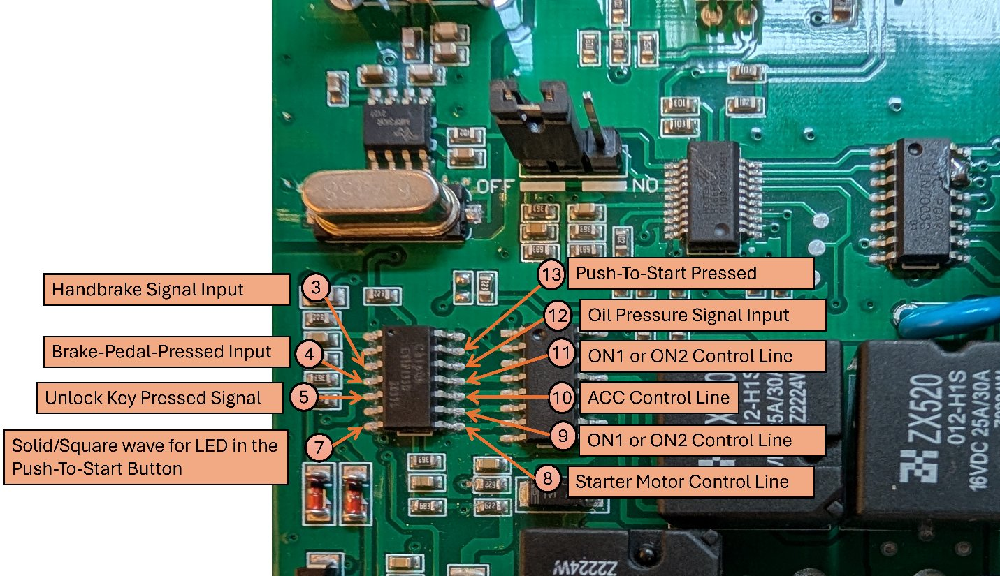
| Pin | Default State | Function & Behavior |
|---|---|---|
| 3 | HIGH | Goes LOW when the handbrake input goes to GND (handbrake engaged) |
| 4 | LOW | Goes HIGH when the brake pedal is pressed |
| 5 | HIGH | Momentarily pulses to GND when the remote's unlock button is pressed. Three consecutive pulses begin the remote-start sequence. |
| 7 | LOW | Drives the push-to-start button's LEDs. Solid HIGH when the brake is pressed outside ACC/Ignition; square-waves (blinks the LED) while ACC or Ignition is active. |
| 8 | LOW | Briefly HIGH when the starter motor is activated (the starter trigger output) |
| 9 | LOW | Drives an ignition line (ON1/ON2); HIGH once Ignition is engaged; stays HIGH after the engine starts |
| 10 | LOW | Drives the ACC line; HIGH on ACC or Ignition; stays HIGH after the engine starts |
| 11 | LOW | Drives an ignition line (ON1/ON2); HIGH once Ignition is engaged |
| 12 | LOW | Goes HIGH when the oil pressure sensor input is HIGH (engine started) |
| 13 | LOW | Pulses HIGH on every physical press of the push-to-start button |
Hacking the Remote-Start Sequence
With the important pins mapped, I tried triggering remote start electronically. To simulate the handbrake requirement, I manually grounded its input pin:
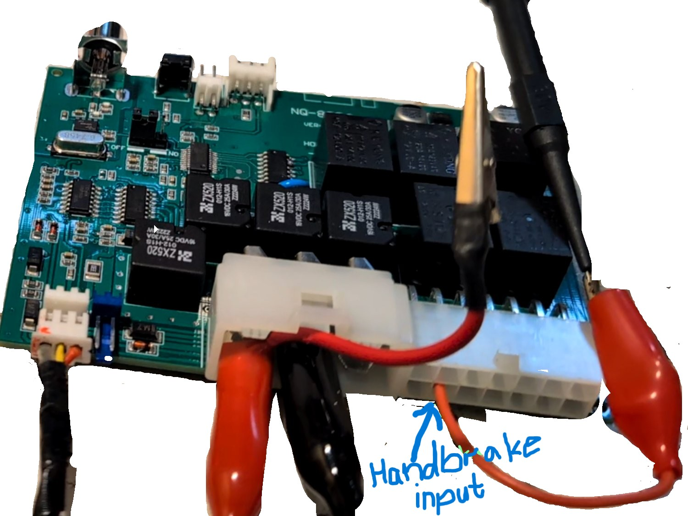
Failed Attempt: Since three consecutive negative pulses on ChipOn's pin 5 are what starts the remote sequence, I tried pulsing that pin manually. The engine cranked and started, then shut off right away because the security system tripped.
If I first pressed unlock once on the real remote and then pulsed pin 5 twice by hand, remote start worked. So the ChipOn microcontroller depends on the Holtek microcontroller having already disarmed the car, and there must be some link between the two tied to that disarm. However, upon inspection, I couldn't find any serial link between the two chips. The only signal the ChipOn gets from the Holtek side comes from a real unlock press, and only the remote can produce that. So I had to disarm the system the way the car expects it: decode and replay the RF signal the remote sends for unlock.
Cracking the Key Fob's RF Protocol
The Holtek IC is the only chip connected to the RF front-end, so it must be receiving the modulated pulses directly. Some kind of pulse-width modulation seemed most likely. To check, I opened the remote and probed what it sends.
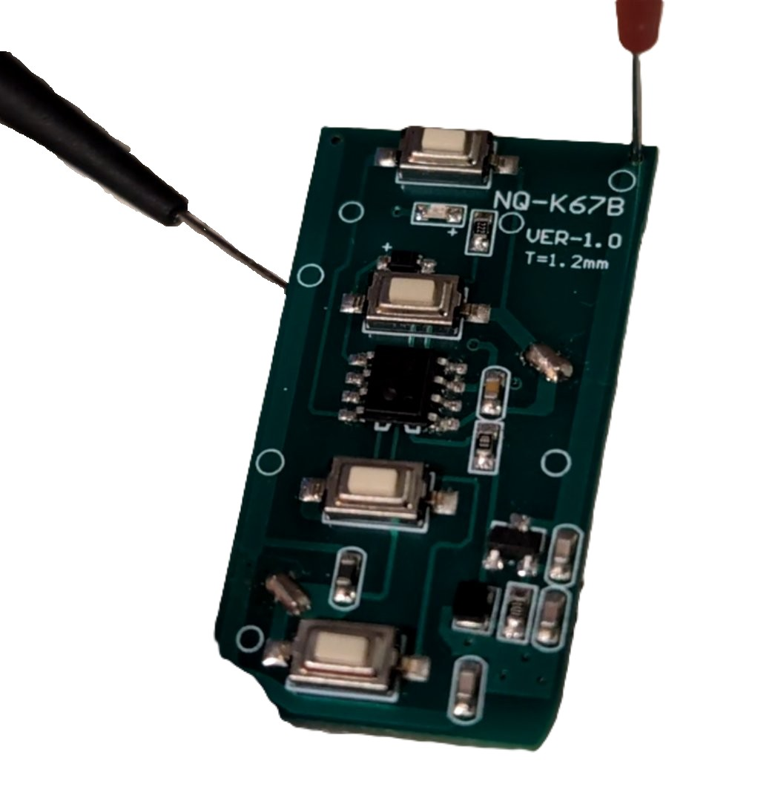
The remote has four push buttons, each wired to its own pin on an HS1530 encoder IC (with the buttons' other terminals common to the 3 V coin-cell supply). A single diode bridges pins 5 and 6, pin 1 is 3 V, pin 3 is ground, and a small RC network off pin 4 (through a component marked B22 and a three-terminal part marked R25) forms what is almost certainly the timing network for the internal oscillator that clocks the encoder.
Probing the antenna trace directly with the oscilloscope showed the transmitted output: normally HIGH, pulled down in a distinct pattern whenever a button is pressed.
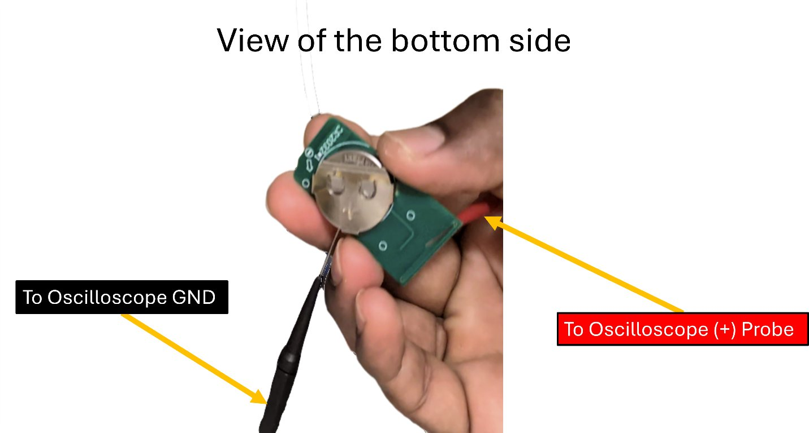
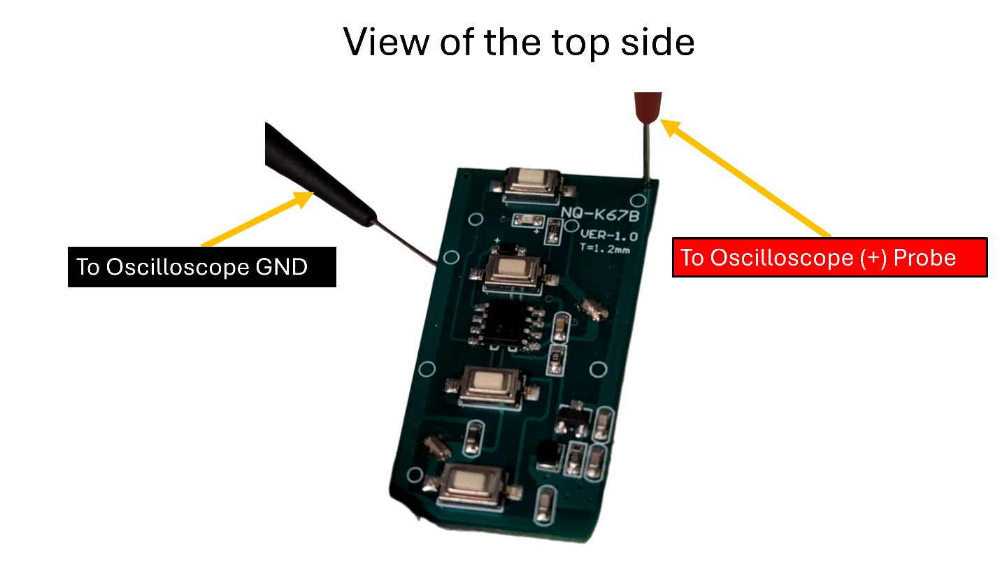
Holding a button repeated the same pulse train with a fixed gap. Every repeat looked the same, so the codes were probably static rather than rolling, with no encryption or hopping to deal with.
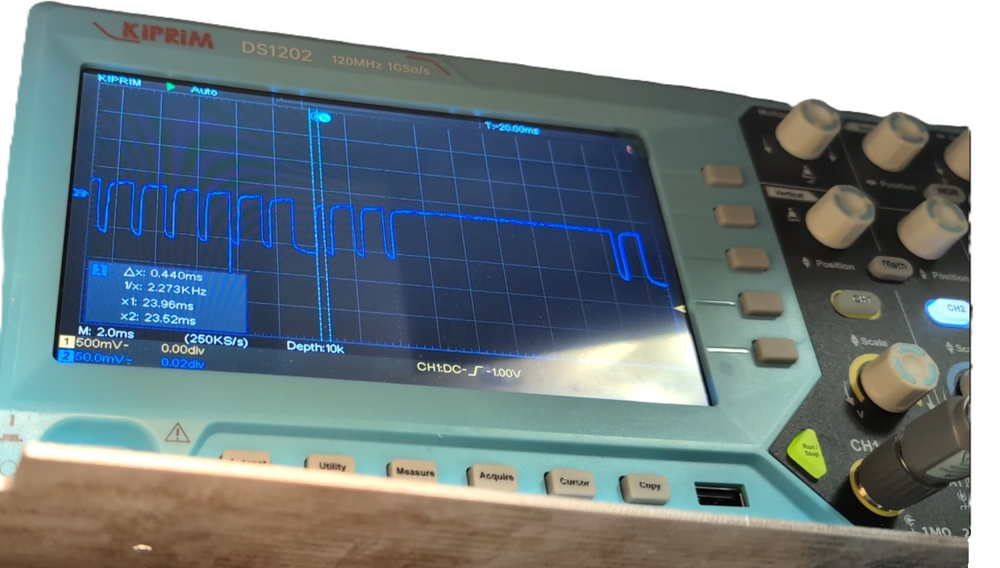
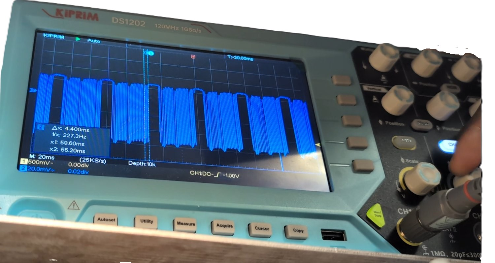
Zooming into a single pulse train to count pulses and measure their durations gave a first rough estimate: a short-pulse width of about 0.46 ms (≈2.17 kHz), and a total train length around 39.1 ms.
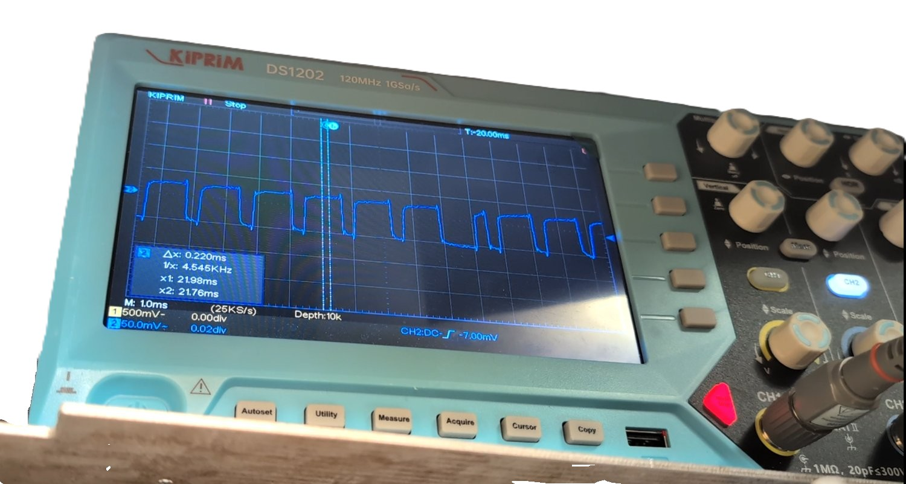
Reading pulses off the scope screen is error-prone, and I couldn't tell yet whether a long pulse was a single wide bit or several narrow ones back to back. So I decided to export the raw waveforms and analyze them in Python.
Tapping a Cleaner Signal at the Receiver
The antenna only gave me the raw, noisy RF envelope. The receiver's decoded output should be much cleaner, and I traced it to pin 11 of the Holtek IC.
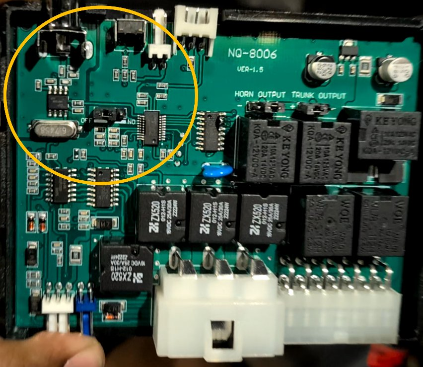
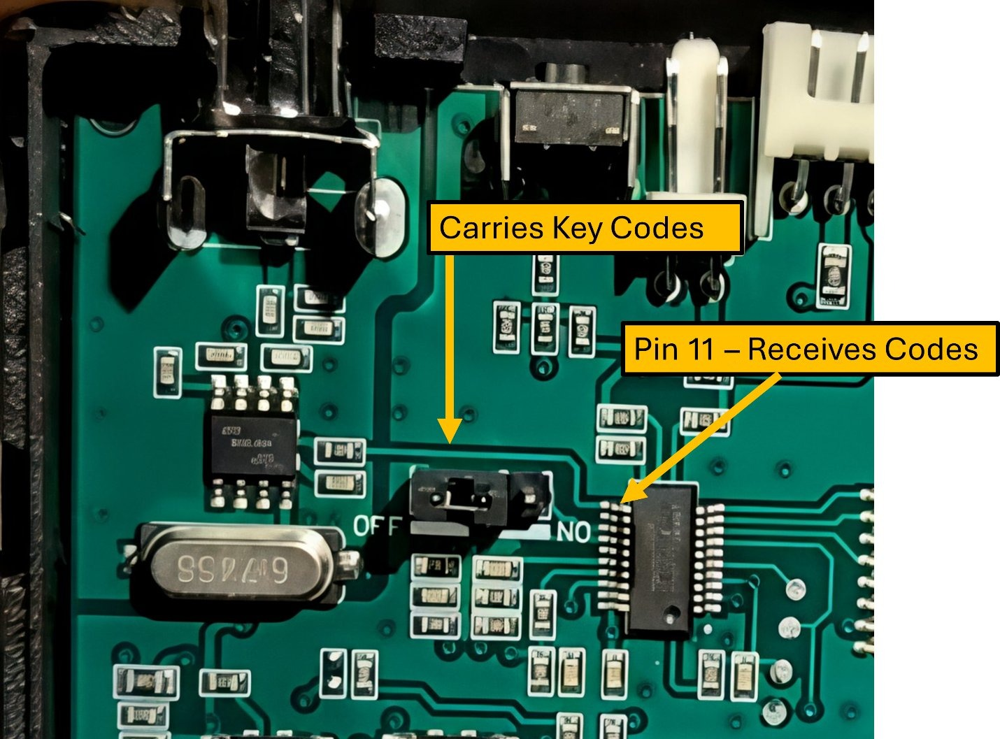
Instead of soldering to the tiny IC pin, I tapped the resistor at the start of that trace which was easier and safer than soldering to the IC pin.
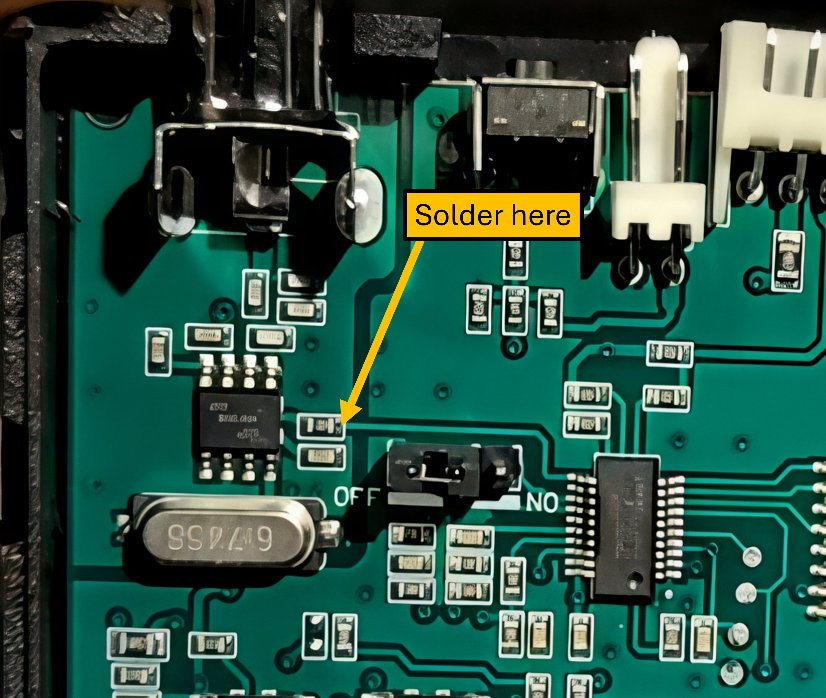
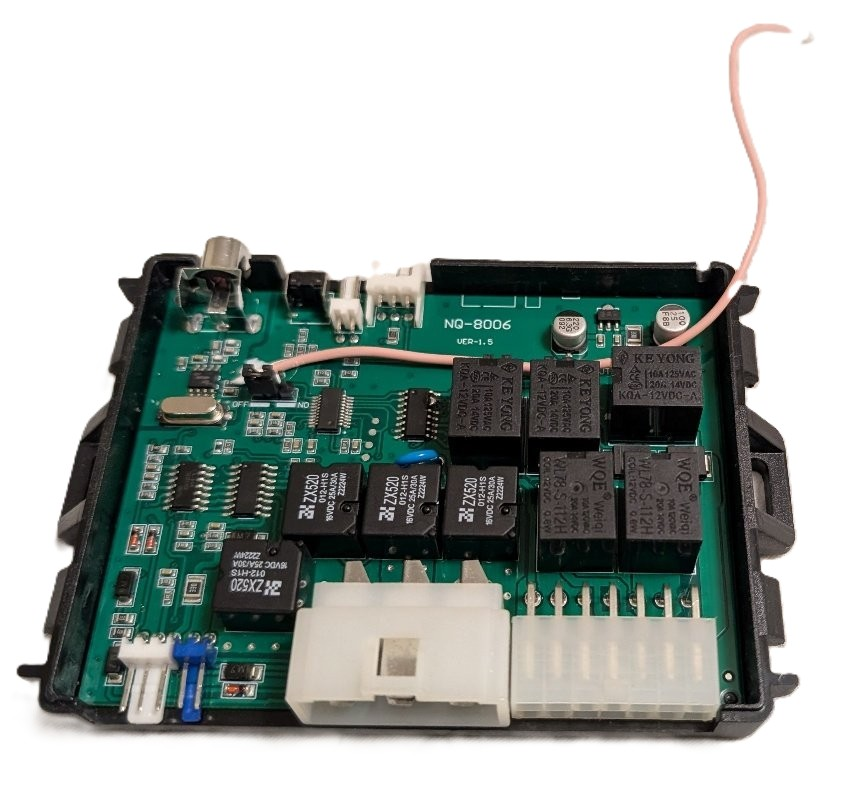
I routed the tap wire to the outside of the enclosure, so I could close the case back up while still leaving the injection point accessible:
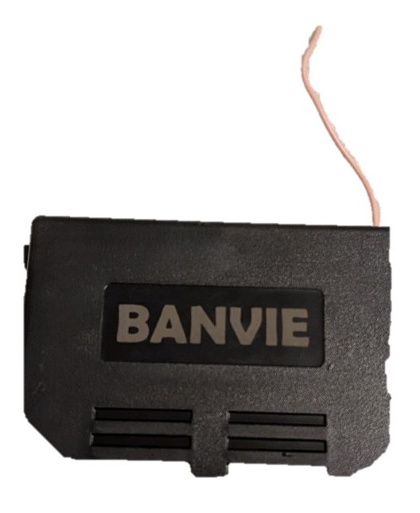
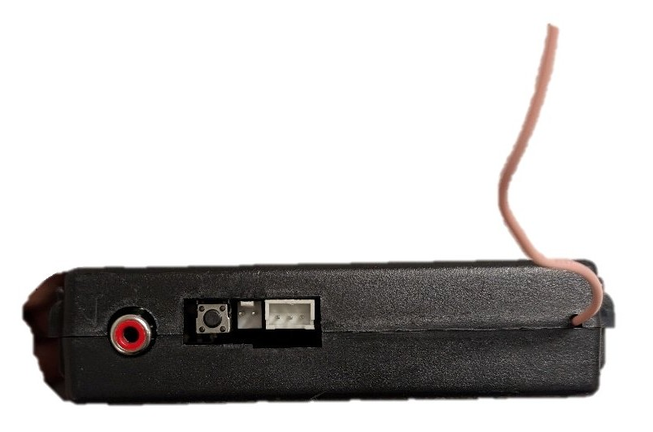
The signal here was much cleaner than tapping onto the antenna of the key fob. The line was HIGH at idle, and pulled down to ground when a code arrived. I also observed occasional glitches where the line was pulled down to ground for short, random durations.
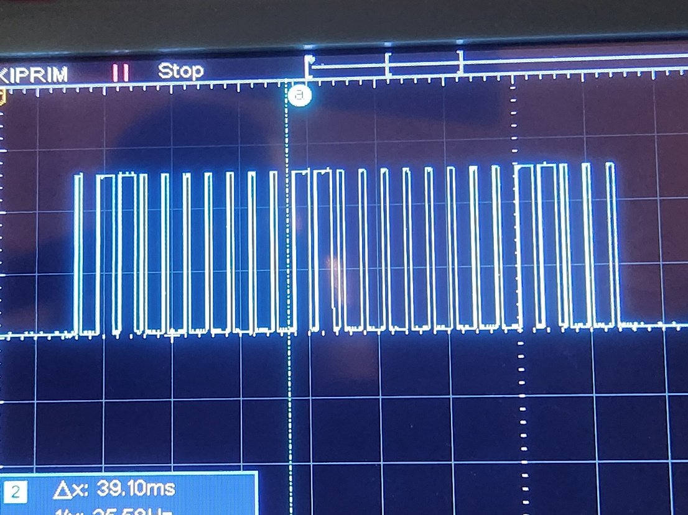
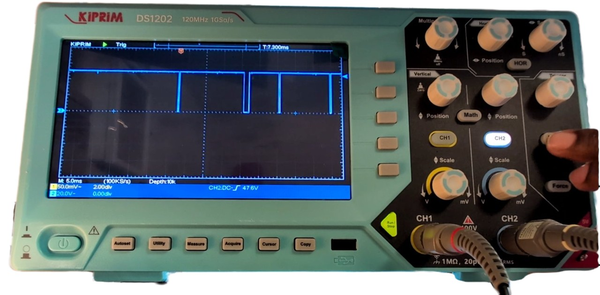
Decoding the Protocol in Python
I wanted to know four things:
- Whether the system uses rolling or fixed codes
- The modulation scheme
- The number of bits per code
- The bit and train durations
I set the scope trigger to Normal mode so it only updates on a real trigger, which let me freeze and save a waveform right after releasing a button. I captured each of the four functions (Lock, Unlock, Muted Lock, Trunk Release) three times, exported them to Excel, and pulled them into a pandas/NumPy/Matplotlib pipeline for analysis.
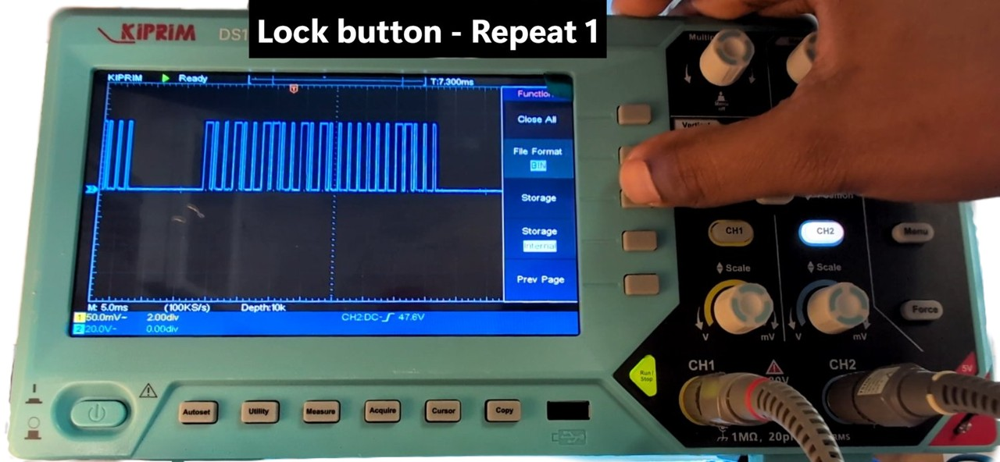
The analysis pipeline, in outline:
- Load the raw scope capture (20 kHz sample rate, i.e. 50 µs per sample) into a NumPy array, one column per captured trace.
- Truncate each trace's leading partial pulse train (this is an artifact of pressing and holding the button before the scope actually triggered).
- Detect edges via
np.diff()against an amplitude threshold, discard anything narrower than 3 samples as noise, then align every trace to its first genuine pulse so all repetitions share a common time origin. - Overlay the three repeats of each function to check repeatability, then overlay all twelve traces together to compare timing across different buttons.
- Re-run edge detection on the aligned traces to measure every pulse's width and the cycle period between consecutive pulses. This gives the raw bit-timing for each key fob code.
- Histogram all pulse widths and cycle periods across every trace to reveal the small number of fixed durations the protocol is actually built from.
The complete analysis script (⬇ Download rf_protocol_analysis.py):
import numpy as np
import pandas as pd
import matplotlib.pyplot as plt
# Load Excel file and convert tp numpy
df = pd.read_excel("key_fob_codes_no_headers.xls")
data = df.to_numpy()
# region Parameters and initial setup
sampling_interval = 50e-6 # 50 microseconds
min_true_pulse_width_n_samples = 3
half_pulse_height = 60
sync_start_index = [400, 400, 400] + [400, 400, 400] + [300, 300, 300] + [300, 300, 300]
max_aligned_len = 1000
n_reps_per_trace = 3
n_trace_types = 4
n_samples = data.shape[0]
n_traces = data.shape[1]
time_vec = np.arange(n_samples) * sampling_interval * 1e3 # In milliseconds
# Assign names and colors to traces
trace_names = ([f'Unlock: rep {i}' for i in range(n_reps_per_trace)] +
[f'Muted Lock: rep {i}' for i in range(n_reps_per_trace)] +
[f'Trunk Release: rep {i}' for i in range(n_reps_per_trace)] +
[f'Lock: rep {i}' for i in range(n_reps_per_trace)])
trace_colors = ['r'] * n_reps_per_trace + ['g'] * n_reps_per_trace + ['b'] * n_reps_per_trace + ['m'] * n_reps_per_trace
# endregion
# region Plot raw data to see what they look like
fig_raws, axs_raws = plt.subplots(n_traces, 1, sharex=True, constrained_layout=True, figsize=(20, 10))
axs_raws[-1].set_xlabel('Time (ms)')
for i, (trace, trace_name, trace_color, ax_aligned) in enumerate(zip(data.T, trace_names, trace_colors, axs_raws)):
ax_aligned.plot(time_vec, trace, color=trace_color)
ax_aligned.set_title(trace_name)
# endregion
# region Truncate off partial pulse train that precedes the main, complete pulse train)
fig_truncated, axs_truncated = plt.subplots(n_traces, 1, sharex=True, constrained_layout=True, figsize=(20, 10))
axs_truncated[-1].set_xlabel('Time (ms)')
truncated_data = []
for i, (trace, trace_name, trace_color, ax_truncated, start_ind) in enumerate(zip(data.T, trace_names, trace_colors, axs_truncated, sync_start_index)):
truncated_trace = trace[start_ind:]
truncated_data.append(truncated_trace)
truncated_time_vec = np.arange(len(truncated_trace)) * sampling_interval * 1e3 # In ms
ax_truncated.plot(truncated_time_vec, truncated_trace, color=trace_color)
ax_truncated.set_title(trace_name)
# endregion
# region Find the start index of the first positive edge (that is not noise) of the truncated traces and align all
# traces at this sample.
fig_aligned, axs_aligned = plt.subplots(n_traces, 1, sharex=True, constrained_layout=True, figsize=(20, 10))
axs_aligned[-1].set_xlabel('Time (ms)')
aligned_traces = []
for i, (trace_name, trace_color, ax_aligned, truncated_trace) in enumerate(zip(trace_names, trace_colors, axs_aligned, truncated_data)):
positive_pulse_start_inds = np.argwhere(np.diff(truncated_trace) >= half_pulse_height).squeeze()
positive_pulse_end_inds = np.argwhere(np.diff(truncated_trace) <= -1 * half_pulse_height).squeeze()
# Handles situations where there are pulses that do not have two edges
if positive_pulse_end_inds[0] < positive_pulse_start_inds[0]:
positive_pulse_end_inds = positive_pulse_end_inds[1:]
if positive_pulse_start_inds[-1] > positive_pulse_end_inds[-1]:
positive_pulse_start_inds = positive_pulse_start_inds[:-1]
positive_pulse_widths = positive_pulse_end_inds - positive_pulse_start_inds
true_first_pulse_start_ind = positive_pulse_start_inds[np.argwhere(positive_pulse_widths > min_true_pulse_width_n_samples).squeeze()][0]
time_aligned_trace = truncated_trace[true_first_pulse_start_ind:max_aligned_len]
aligned_traces.append(time_aligned_trace)
time_aligned_time_vec = np.arange(len(time_aligned_trace)) * sampling_interval * 1e3 # In milliseconds
ax_aligned.plot(time_aligned_time_vec, time_aligned_trace, color=trace_color)
ax_aligned.set_title(trace_name)
# endregion
# region Overlay all repeats for a given function on top of each other to see if they are similar
fig_overlay, axs_overlay = plt.subplots(n_trace_types + 1, 1, sharex=True, constrained_layout=True, figsize=(20, 10))
axs_overlay[-1].set_xlabel('Time (ms)')
for i, (time_aligned_trace, trace_name, trace_color) in enumerate(zip(aligned_traces, trace_names, trace_colors)):
time_aligned_time_vec = np.arange(len(time_aligned_trace)) * sampling_interval * 1e3 # In milliseconds
axs_overlay[int(i / 3)].plot(time_aligned_time_vec, time_aligned_trace, color=trace_color)
axs_overlay[int(i / 3)].set_title(trace_name.split(':')[0])
axs_overlay[-1].plot(time_aligned_time_vec, time_aligned_trace, color=trace_color)
axs_overlay[-1].set_title('All traces overlain')
# endregion
# region Get all pulse widths per key fob function repeat as a sequence.
all_pulse_widths_store = []
cycle_periods_store = []
positive_pulse_width_sequences = [[] for _ in range(n_trace_types)]
for i, (trace_name, aligned_trace) in enumerate(zip(trace_names, aligned_traces)):
positive_pulse_start_inds = np.argwhere(np.diff(aligned_trace) >= half_pulse_height).squeeze()
positive_pulse_end_inds = np.argwhere(np.diff(aligned_trace) <= -1 * half_pulse_height).squeeze()
# Handles situations where there are pulses that do not have two edges
if positive_pulse_end_inds[0] < positive_pulse_start_inds[0]:
positive_pulse_end_inds = positive_pulse_end_inds[1:]
if positive_pulse_start_inds[-1] > positive_pulse_end_inds[-1]:
positive_pulse_start_inds = positive_pulse_start_inds[:-1]
positive_pulse_widths = positive_pulse_end_inds - positive_pulse_start_inds
indices_of_true_positive_pulses_in_positive_pulse_inds = np.argwhere(positive_pulse_widths > min_true_pulse_width_n_samples).squeeze()
true_positive_pulse_widths = positive_pulse_widths[indices_of_true_positive_pulses_in_positive_pulse_inds] * sampling_interval * 1e6 # In microseconds
start_indices_of_true_positive_pulses = positive_pulse_start_inds[indices_of_true_positive_pulses_in_positive_pulse_inds]
cycle_period_sample_counts = np.diff(start_indices_of_true_positive_pulses)
cycle_periods = cycle_period_sample_counts * sampling_interval * 1e6 # In microseconds
num_pulses_per_sequence = len(true_positive_pulse_widths)
print(f"\n\n{trace_name}: \n Number of pulses (bits) per sequence: {num_pulses_per_sequence}; "
f"\nPulse widths sequence: {true_positive_pulse_widths};"
f"\nPulse cycle periods: {cycle_periods}.")
all_pulse_widths_store = all_pulse_widths_store + true_positive_pulse_widths.tolist()
cycle_periods_store = cycle_periods_store + cycle_periods.tolist()
positive_pulse_width_sequences[int(i/n_reps_per_trace)].append(true_positive_pulse_widths.tolist())
# endregion
# region Print the average pulse train per key fob function
print(f"\n======================Average Pulse Widths Sequences Per Fob Function=======================\n")
average_positive_pulse_width_sequence_per_fob_function = np.mean(np.array(positive_pulse_width_sequences), axis=1)
for trace_name, pulse_sequence in zip(trace_names, average_positive_pulse_width_sequence_per_fob_function):
pulse_sequence_str = str(pulse_sequence.astype(int)).replace('\n', '')
print(f"{trace_name.split(':')[0]}: {pulse_sequence_str}\n")
print(f"\n=============================================\n")
# endregion
# region Plot the distribution of pulse widths and cycle periods
fig_pulse_widths, axs_pulse_widths = plt.subplots(2, 1, constrained_layout=True, figsize=(20, 10), sharex=True)
axs_pulse_widths[-1].set_xlabel('Time (uS)')
axs_pulse_widths[0].hist(all_pulse_widths_store, bins=50)
axs_pulse_widths[0].set_title('Pulse widths histogram')
axs_pulse_widths[1].hist(cycle_periods_store, bins=50)
axs_pulse_widths[1].set_title('Cycle periods histograms')
# endregion
plt.show()Plotting every raw trace stacked vertically made the leading partial pulse train (an artifact of pressing-and-holding before the trigger point) obvious at the start of each one:
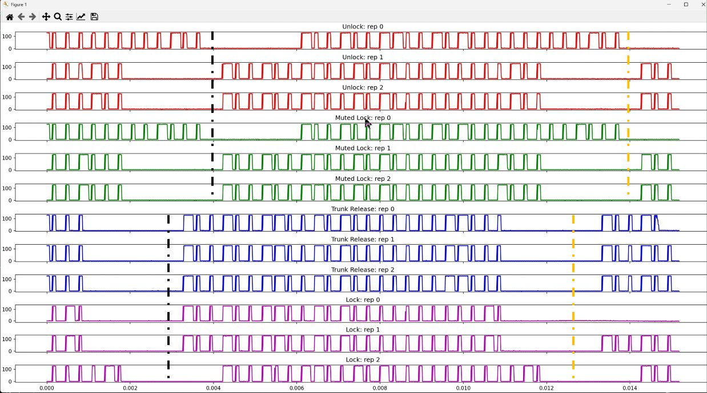
After truncating that leading section, I also cut the traces off at a fixed 1000-sample window (the max_aligned_len parameter). This removed the beginning portion of the trailing repeat due to pressing-and-holding of the key fob button.
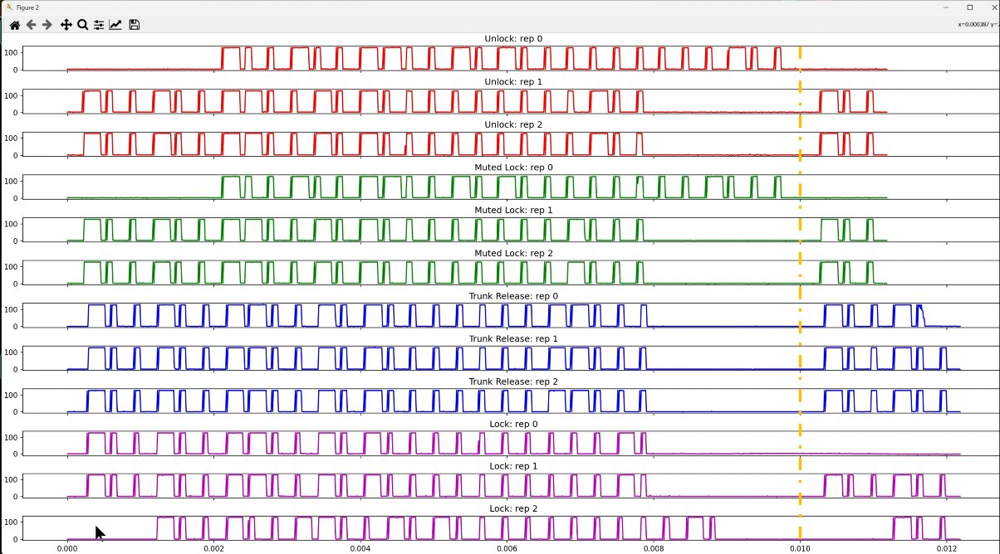
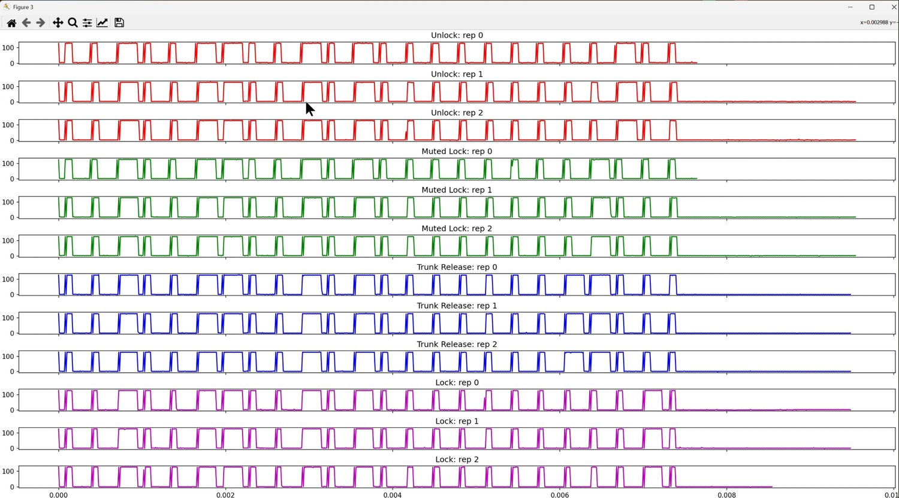
Every pulse train was 24 bits. The three repeats of each function overlapped almost perfectly apart from noise, so the remote used a static, non-rolling code.
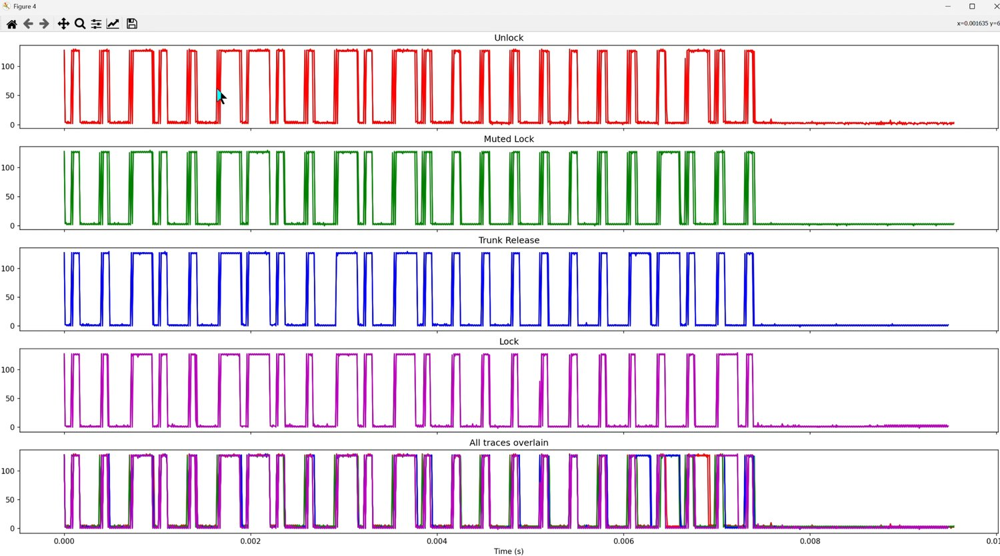
Where the traces disagreed, it was noise. Everywhere else the pulses lined up:
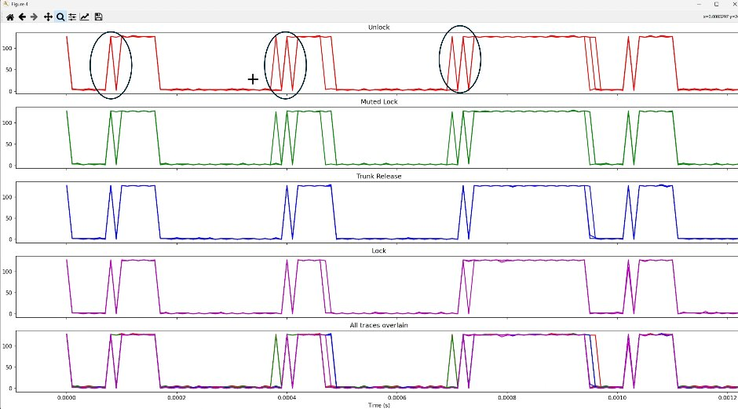
Overlaying every trace from all four functions together showed the pulses agreeing up through roughly the first 20 bits, then diverging, meaning only the last few bits actually distinguish which button was pressed, with the rest acting as a shared preamble/device ID.
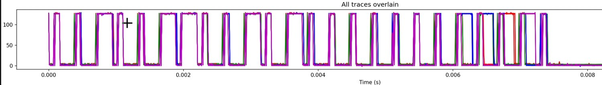
The pulse-width histogram showed two clear clusters, around 0.2 ms, and 2.3 ms. These correspond to two fixed pulse widths encoding 0 and 1. There is a third small peak resembling noise (glitches).
Since pin 11 on the Holtek IC idles HIGH and gets pulled down by the incoming code, the negative (GND) pulses are the actual data of interest. Long low-going pulses (≈2300 µs) represent one bit value, short ones (≈200 µs) the other, though which is logically "1" versus "0" is ultimately an arbitrary labeling choice.
Averaging the three repeats of each function gave a clean pulse-width sequence I could load straight into a microcontroller:
Protocol Summary
- On-off keyed, fixed (non-rolling) code: the same 24 bit pulse train every time a given button is pressed.
- Two pulse durations encode the bits: a long pulse (≈1150–2300 µs) and a short pulse (≈200–450 µs), within a roughly fixed cycle period.
- Only the last several bits differ between the four button functions. This indicates that the rest may form a shared preamble/device-ID prefix.
Injecting the Codes with an ESP8266 (NodeMCU)
The last step was reproducing those sequences in hardware. I programmed a NodeMCU (ESP8266) to toggle a single digital pin between LOW and HIGH according to each pulse-width sequence, injecting the signal directly onto the same wire I tapped earlier at Holtek pin 11. Its onboard Wi-Fi would later let Alexa trigger these functions remotely.
I wrote the injector to define a 25-element boolean array per function (24 real bits plus a leading edge), each one with precise microsecond timing, and to listen on the serial port for a single character (L/T/U/M) to decide which sequence to fire. The complete NodeMCU sketch is below (⬇ Download banvie_code_injector.ino).
#include <Arduino.h>
#include <ESP8266WiFi.h>
////////////////////////////////////////////////////////////////////////////
// BANVIE SYSTEM CONTROL VARIABLES
#define banvie_pin D1 // The digital pin that interfaces with the Banvie System
volatile long startTime = 0; // A timing variable
const int num_positive_pulses = 25; // 25 positive pulse edges because we want 24 pull downs.
const int num_repeats_per_train = 10; // In case you want to re-issue the same pulse train multiple times (mimicks press and hold)
const int trunk_release_key_press_hold_time_s = 4; // Mimicks Press and hold this long for trunk release.
const uint16_t period_us = 1500; // The cycle period per pulse
const uint16_t long_pulse_length_us = 1200; // Duration of a HIGH bit
const uint16_t short_pulse_length_us = period_us - long_pulse_length_us; // Duration of a LOW bit
////////////////////////////////////////////////////////////////////////////
// PULSE TRAINS PER FOB FUNCTION
bool lockPulseWidths[num_positive_pulses] = {1,0,0,1,0,0,1,1,0,0,1,0,1,0,0,0,0,0,0,0,0,0,0,1,0}; // Lock sequence
bool mutedLockPulseWidths[num_positive_pulses] = {1,0,0,1,0,0,1,1,0,0,1,0,1,0,0,0,0,0,0,0,0,1,0,0,0}; // Muted Lock sequence
bool unlockPulseWidths[num_positive_pulses] = {1,0,0,1,0,0,1,1,0,0,1,0,1,0,0,0,0,0,0,0,0,0,1,0,0}; // Unlock sequence
bool trunkReleasePulseWidths[num_positive_pulses] = {1,0,0,1,0,0,1,1,0,0,1,0,1,0,0,0,0,0,0,0,1,1,0,0,0}; // Trunk release sequence
////////////////////////////////////////////////////////////////////////////
// BANVIE SYSTEM CONTROL FUNCTIONS
void issuePulses(bool pulseWidths[], int pulse_count){
pinMode(banvie_pin, OUTPUT); // Set the communication pin as an output because we are forcefully driving the line.
digitalWrite(banvie_pin, LOW); // Initiate communication by pulling the line LOW
for (int r = 0; r < num_repeats_per_train; r++){ // Outer loop for repeating pulse trains (mimicks press and hold of a fob key)
for (int i = 0; i < pulse_count; i++) { // Inner loop handles a single pulse sequence
// If a bit must be HIGH, assign the long pulse length to the highTime, and if the bit is low, the highTime must be set to low.
uint16_t highTime = pulseWidths[i] == 1? long_pulse_length_us: short_pulse_length_us;
// The lowTime is simply the remainder of the time period on the cycle after allocating time for the high portion.
uint16_t lowTime = pulseWidths[i] == 1? short_pulse_length_us: long_pulse_length_us;
// HIGH portion
digitalWrite(banvie_pin, HIGH);
startTime = micros();
while ((micros() - startTime) < highTime){};
// LOW portion
digitalWrite(banvie_pin, LOW);
startTime = micros();
while ((micros() - startTime) < lowTime){};
}
delay(12); // gap between trains
}
// Important: We should set the pin back to a floating state so that an external remote too can shift the logic levels to communicate with the Banvie.
pinMode(banvie_pin, INPUT);
}
////////////////////////////////////////////////////////////////////////////
// METHODS THAT SEND THE APPROPRIATE SEQUENCE PER KEY FOB FUNCTION
void lockCar(){
Serial.println("Locking car");
issuePulses(lockPulseWidths, num_positive_pulses);
}
void mutedLockCar(){
Serial.println("Muted Lock Activated");
issuePulses(mutedLockPulseWidths, num_positive_pulses);
}
void unlockCar(){
Serial.println("Unlocking Car");
issuePulses(unlockPulseWidths, num_positive_pulses);
}
void releaseTrunk(){
Serial.println("Releasing Trunk Door");
long trunk_start_time = millis();
while ((millis() - trunk_start_time) < (trunk_release_key_press_hold_time_s * 1000)){
issuePulses(trunkReleasePulseWidths, num_positive_pulses);
}
}
////////////////////////////////////////////////////////////////////////////
// COMPARE THE CHARACTERS RECEIVED VIA SERIAL INPUT TO CALL APPROPRIATE FOB FUNCTION
void handleSerialInputForBanvieSystem(char c){
if (c == 'L') {
lockCar();
}
else if (c == 'T') {
releaseTrunk();
}
else if (c == 'U') {
unlockCar();
}
else if (c == 'M') {
mutedLockCar();
}
}
////////////////////////////////////////////////////////////////////////////
// SETUP THE SYSTEM
void setupBanviewSystem(){
pinMode(banvie_pin, INPUT); // This should be set to floating whenever we do NOT issue any command so that the normal remote can also work.
Serial.println("Banvie system initialized.");
Serial.println("Press 'L', 'T', 'U', 'M' for 'Lock', 'Trunk release', 'Unlock', and 'Muted Lock' respectively.");
}
void setup() {
Serial.begin(74880);
setupBanviewSystem();
}
void loop() {
// Repeatedly poll for characters received via the serial input and call the appropriate fob function
if (Serial.available() > 0) {
char c = Serial.read();
Serial.println("Received Serial Code " + String(c));
handleSerialInputForBanvieSystem(c);
}
delay(100);
}Two things made this code reliable. First, I set the pin back to a floating INPUT after every transmission, so the real remote still works when the NodeMCU is idle. Second, the timing doesn't have to be exact, just close enough.
I swept the short-pulse duration while watching the relays actually click, and found it stayed reliable anywhere from 250 µs to 650 µs. Outside that range, the BANVIE receiver stopped recognizing the bit. Doing the same sweep for the long pulse (while keeping the short pulse inside its valid range), I found a working window of roughly 800 µs to 1400 µs. That's a lot of margin for a protocol with no error correction, which should help once this is in a noisy car instead of on the bench.
With the injector proven on lock, unlock, muted lock, and trunk release, the last test was the original goal: firing three consecutive unlock pulses to trigger a full remote engine start. The push-to-start LED lit up on cue. The BANVIE microcontrollers ran through disarm, ignition and cranking just as they would for the real fob, with the stock firmware untouched.
What's Next
I used this injector for the rest of the build: wiring it into the Lancer, adding DC–DC conversion to keep standby draw low while the car is armed, and exposing lock, unlock, remote start and trunk release to Alexa. That build is written up separately: see Voice-Controlled Remote Start on a 2003 Mitsubishi Lancer.